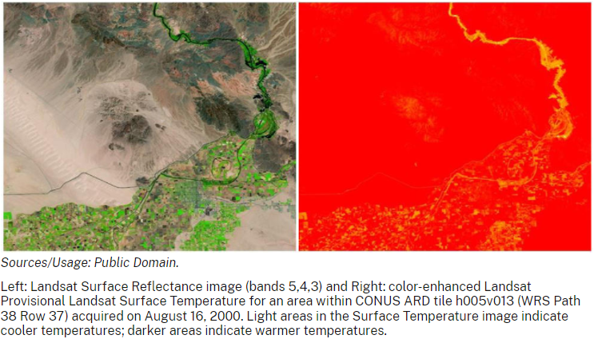

Land Surface Temperature Calculator - GEOG 464 Project Proposal
For this project I would like to streamline a current multi-step process that I had to go through in Advanced GIS last semester.
This process involves taking satellite imagery and using an amount of the spectral bands to calculate the estimated surface temperature of the given image.
While the USGS provides temperature data for imagery taken within the United States, the rest of the world is left without this processing already done.
Following a guide
like I did in my final project in Advanced GIS last semester, I will create a python tool (and possibly a QGIS plugin, time permitting)
that will automatically take a Landsat (OR Sentinel, again time permitting) imagery dataset and automatically convert it to a surface temperature image and
output the image. The guide(s) I will be following (and have followed in the past) reference the
USGS process
to get the desired information from the data.
The process will include the following steps:
- Data downloading using NASA’s Earth Data ASF Python Search Module made public during a presentaion which I attended
- Parsing and creating geodataframes for each required Band image
- Clipping to a desired user location by input of another data file
- Parsing and utilizing metadata values for calculations
- Value conversion
- Raster conversion
- Raster export and map visualization
- Vector polygon conversion of final maps
- Sentinel data download/conversion
- Other satellite data download/conversion
Additional Potential Steps/Functions
The goal of this project is to provide an easy to use tool to both download and analyze Landsat imagery using the on-board thermal imaging sensors to derive land surface temperature for the end user, saving them many steps of calculations and searching through metadata. If possible the creation of a QGIS plugin with this finished product will make it even more accessible and user friendly.
